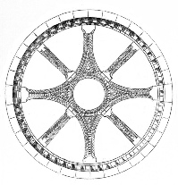

International
Medieval Society, Paris
Société Internationale des Médiévistes,
Paris
Ongoing
Activities
• Monthly apéritif: an informal gathering bringing together
members to network, discuss research, and problem-solve.
• Visits with specialists to medieval sites.
• Annual Symposium
• Production of the Annual Bulletin of the International Medieval Society
of Paris (resumés of research in progress or completed, reviews,
happenings)
For
information, or to attend any of the events below, please e-mail
contact@ims-paris.org.
18
November 2004 - 6:00 to 8:00 p.m. 4
December 2004 - 3:30 pm 9
December 2004 - 6:00 to 8:00 p.m. 15
January 2005 10
February 2005 - 6:00 to 8:00 p.m. 30
June-2 July 2005 |